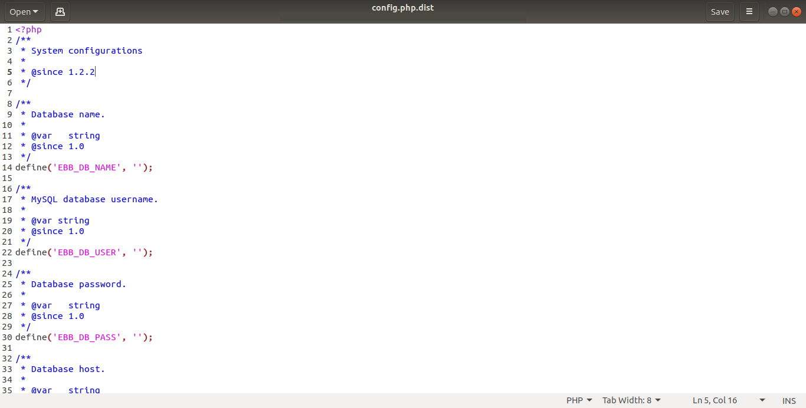
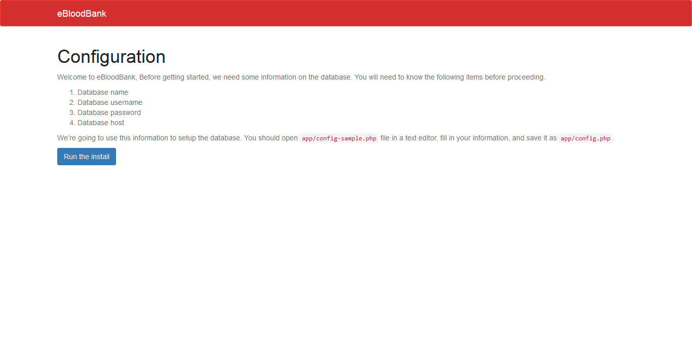
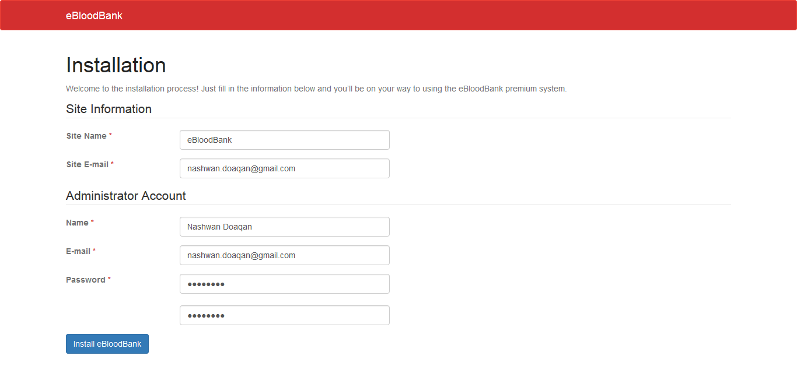
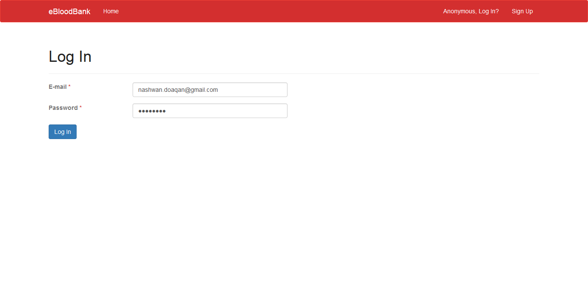
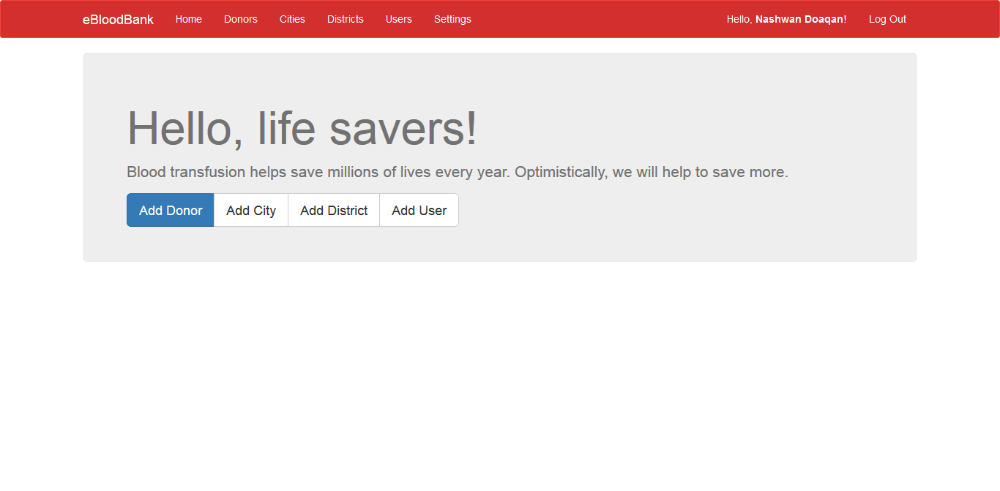

Customizable: eBloodBank code is nicely organized to make the customization process a piece of cake.
Ease to Use: eBloodBank designed with usability in mind, it's efficient to use and easy to learn.
Translation Ready: Not an English user? Never mind, eBloodBank is ready for translation to your language.
Users Management: eBloodBank ships with a straightforward users management system which includes, but is not limited to, the authentication, session and role-based-access-control mechanisms.
Donors Management: Storing blood donors data is not a messy process anymore, eBloodBank offers a simple user-interface to add, edit, approve, remove and search by specific criteria.
City\District Taxonomy: Being organized is being in control, eBloodBank provides an ability to categorize the donors by a manageable cities and districts list.
Pretty Permalinks: eBloodBank add support for the Pretty Permalinks, which make sense and not filled with incomprehensible parameters.
B) Requirements
PHP version 7.2 or higher.
MySQL version 5.7 or higher.
Apache HTTP server (with mod_rewrite module) or Nginx.
C) Installation
Open config/config.php.dist file in a text editor, fill in your information, and save it as config/config.php.

Open install.php in your browser and follow up the installer instructions.


Sign in with the user e-mail and password you chose during the installation.


D) Customization
eBloodBank ships with a straightforward theming system to let the developers customize their website appearance.
Creating a new theme
Create a new folder in the themes directory, let's name it my-winry for an example.
Create the theme.yml file inside it to store the theme information, for an example:
Name: My Winry Version: 1.0 Textdomain: winry Author Name: Nashwan Doaqan Author URL: http://nashwan-d.com Description: My eBloodbank theme.
Copy the templates, locales and assets directories from the default theme winry and then start editing any template or stylesheet you want to modify. The default theme is a great start point, you can learn a lot from it.
Creating a new template stack
Sometimes you don't need a new whole theme, maybe you just want to modify a few templates like header.php, footer.php or home.php. The template stacks feature could be very helpful in this case.
Create a new folder in the templates directory, it's recommended to use numerical names greater than 0.
Copy the template you want to modify from the 0 stack to your new created one and start editing it's contents.